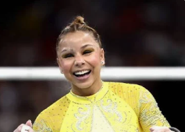
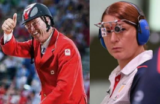
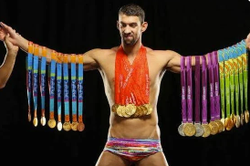

L'histoire des Jeux Olympiques
Depuis plus d’un siècle, les Jeux Olympiques racontent bien plus que de simples performances sportives.
Ce site propose d’explorer l’histoire des JO à travers les chiffres : pays dominants, parité hommes-femmes
et anecdotes marquantes, les plus grands champions ou les médailles les plus remarquables.
À l’aide de visualisations interactives, l’objectif est de faire parler les données afin de révéler
des tendances, des comparaisons et des faits parfois inattendus.
Tableau général des médailles
Top 10 des pays par nombre de médailles
Les États-Unis dominent largement l’histoire des Jeux Olympiques, avec une avance confortable sur les autres nations grâce à leurs performances régulières, été comme hiver. Cette domination met en lumière la profondeur de leur programme sportif et la constance de leurs athlètes au fil des décennies.
Les Jeux d’hiver de 2026 à Milan-Cortina offrent une occasion unique pour certains pays de progresser dans le classement. La France et la Suède pourraient ainsi gagner quelques places, tandis que le Canada, actuellement 11ᵉ, pourrait intégrer le top 10 grâce à ses performances hivernales. D’autres nations ont également le potentiel de rejoindre le classement dans le futur, tandis que la bataille entre le Japon et l’Australie reste très serrée, illustrant la compétition constante pour figurer parmi les meilleures nations olympiques.
Carte du monde olympique
La parité dans les Jeux
Nombre d'athlète Femme et Homme Jeux Olympiques d'été
Nombre d'athlète Femme et Homme Jeux Olympiques d'hiver
Historiquement, de nombreuses disciplines des Jeux olympiques étaient réservées aux hommes,
comme la boxe, la lutte, le judo, l’haltérophilie, le football ou encore le saut à ski et le bobsleigh.
Les femmes ont été progressivement intégrées au programme olympique à partir du XXᵉ siècle.
Très peu de sports ont été exclusivement féminins, principalement la gymnastique rythmique
et la natation synchronisée.
Aujourd’hui, la quasi-totalité des disciplines sont ouvertes aux femmes.
Le CIO vise désormais une parité femmes-hommes dans le programme olympique.
Les plus grands médaillés
Anecdotes olympiques
Le plus jeune athlète
Dimitrios Loundras
Dimitrios Loundras a participé aux Jeux Olympiques à seulement 10 ans et 218 jours lors des Jeux de 1896. Engagé en gymnastique aux barres parallèles dans l’épreuve par équipe, il a remporté une médaille de bronze. Il reste à ce jour le plus jeune athlète et le plus jeune médaillé olympique officiel de l’histoire.
Le plus vieux athlète
Oscar Swahn
Oscar Swahn a participé aux Jeux Olympiques de 1920 à l’âge de 72 ans et 281 jours en tir (cerf courant). Il a remporté une médaille d’argent, faisant de lui le médaillé olympique le plus âgé de l’histoire.
Le plus grand athlète
Yao Ming

Mesurant 2,29 mètres, Yao Ming est l’athlète le plus grand à avoir participé aux Jeux Olympiques. Il a représenté la Chine en basketball lors des éditions de 2000, 2004 et 2008.
La plus petite athlète
Flávia Saraiva
Avec une taille de 1,33 mètre, Flávia Saraiva s’est illustrée lors des Jeux Olympiques de Rio 2016 en gymnastique artistique, devenant une figure emblématique au Brésil.
Record de participations
Ian Millar & Nino Salukvadze
Le record de participations aux Jeux Olympiques est partagé par deux athlètes avec 10 participations. Nino Salukvadze a participé à dix éditions consécutives, de 1988 à 2024.
Athlète le plus médaillé
Michael Phelps
Michael Phelps est l’athlète le plus médaillé de l’histoire olympique avec 28 médailles, dont 23 en or, un record absolu.